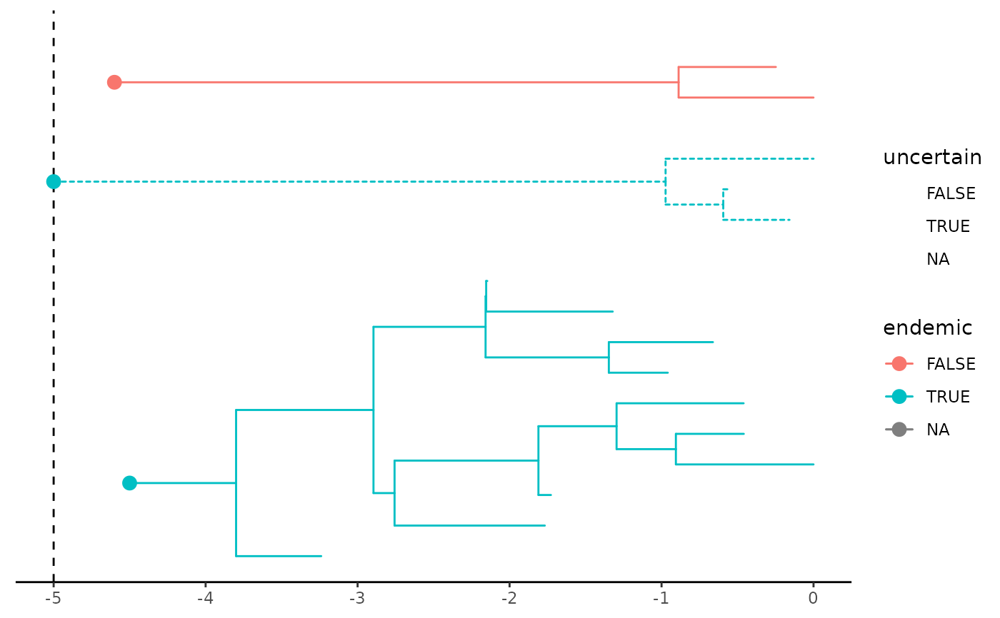

Shows the phylogenies of the multiple clades present on the island
Usage
DAISIE_plot_input(
trees,
age = NULL,
tcols = NULL,
metadata = NULL,
mapping = NULL,
xlen = 0.001,
pargs = NULL,
bckgd = "white"
)Arguments
- trees
A list of trees, in phylo format, named after their respective clades
- age
The age of the island, on the same scale as the branch lengths of the trees. If unspecified, the depth of the deepest stem across trees.
- tcols
A vector of colonization times, with one value per clade. Order must be the same as in `trees`. If unspecified, all clades are assigned the age of the island as colonization time.
- metadata
Optional data frame with clade-level metadata. One column must be named "clade".
- mapping
Optional aesthetic mapping to apply to the trees, as returned by the `ggplot2::aes` function. Mapped variables can be anything in the columns of the `data` node-wise data frame associated to the `ggtree` plot being created (e.g. node, label, clade, mrca) or anything in the columns of the clade-wise `metadata`, if provided (in this case the aesthetics is mapped to all nodes within each clade).
- xlen
Length of the extra tips grafted to each tree at the island age. These are a hack for scaling the plot. Keep this value small.
- pargs
Optional arguments to be passed to `geom_point` when plotting points at colonization events (e.g. size, shape...).
- bckgd
Optional background color of the figure. This is because we use rectangles as a hack to hide tree branches prior to island colonization. Default to white background.
Value
A `ggtree` plot, which is also a `ggplot` object. The output is fully customizable, as any `ggplot` object.
Examples
# check whether package tibble has been installed
if (!requireNamespace('tibble', quietly = TRUE)) {
cat("Package tibble needed for this function to work. Please install it.")
} else {
set.seed(42)
# Random trees
t1 <- ape::rtree(10)
t1$tip.label <- gsub("t", "t1.", t1$tip.label)
t2 <- ape::rtree(3)
t2$tip.label <- gsub("t", "t2.", t2$tip.label)
t3 <- ape::rtree(2)
trees <- list(t1, t2, t3)
names(trees) <- c("A", "B", "C")
# Toy colonization events for each clade
tcols <- c(4.5, 5, 4.6)
# Toy metadata
metadata <- tibble::tibble(
clade = names(trees),
endemic = TRUE, # whether each clade is endemic
uncertain = FALSE # whether colonization time is known for sure
)
metadata$endemic[3] <- FALSE
metadata$uncertain[2] <- TRUE
# Island age
age <- 5
# Make a plot
p <- DAISIE_plot_input(
trees,
age,
tcols,
metadata,
mapping = ggplot2::aes(color = endemic, linetype = uncertain),
pargs = list(size = 3)
)
p
}
#> Scale for y is already present.
#> Adding another scale for y, which will replace the existing scale.
#> Joining with `by = join_by(label)`
#> Warning: Removed 1 row containing missing values or values outside the scale range
#> (`geom_point()`).
